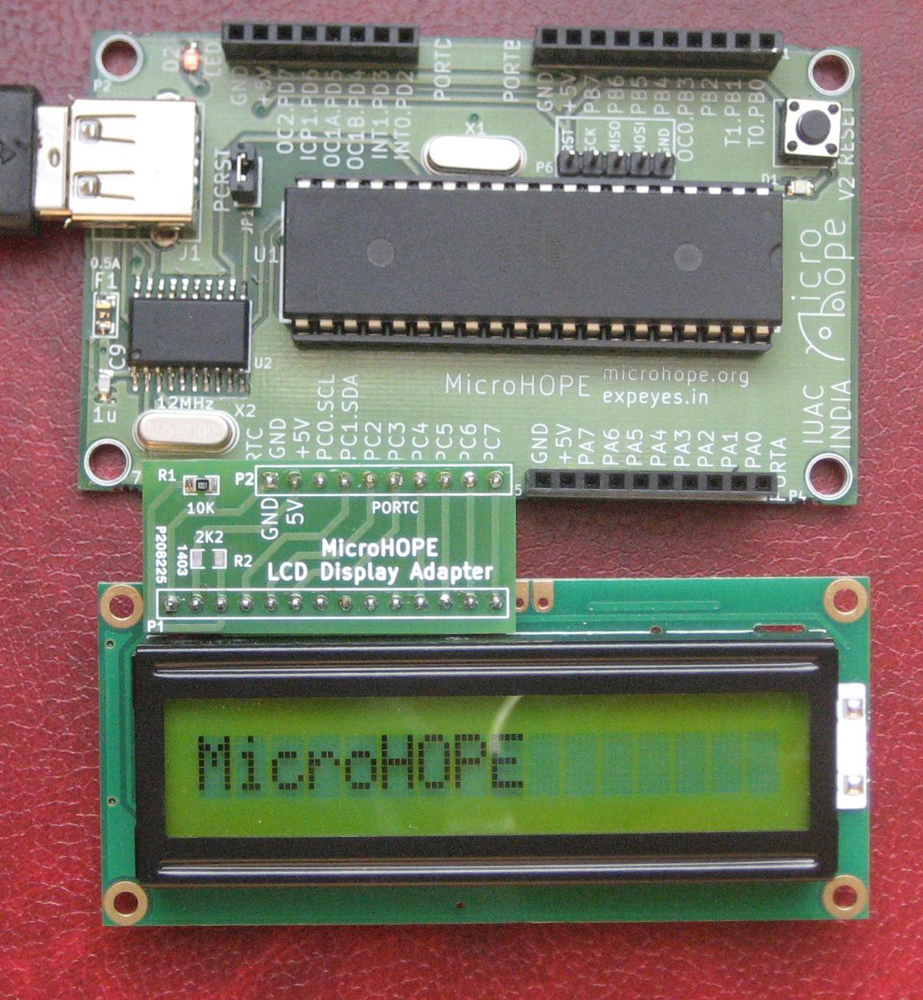

PySerial
Communication with Embedded Hardware using pyserial
By Arun Jayan
What is Embedded System/Hardware ?
An embedded system is a computer system with a dedicated function within a larger mechanical or electrical system, often with real-time computing constraints.It is embedded as part of a complete device often including hardware and mechanical parts. Embedded systems control many devices in common use today.Modern embedded systems are mainly based on microcontrollers
Development Boards
MicroHOPE
It is an open hardware designed by IUAC New Delhi.It is Based on Atmega32.We can program microHOPE using AVR C or Assembly Language .
{kind=link}
MicroHOPE Block Diagram
{kind=link}
Arduino
Popular Development Board in the world.It is easy to codeIn the case of lot of libraries available for interfacing different modules like GSM,Bluetooth,ZigBee etc.

PySerial
- This module encapsulates the access for the serial port.
- It provides backends for Python running on Windows, Linux and MacOS
- It is released under a free software license.
PySerial Echo
#echo.py
import serial
try:
fd = serial.Serial('/dev/ttyACM0', 38400, stopbits=1, timeout = 1.0)
except:
print "device not connected"
while 1:
c = raw_input('Enter a character : ')
fd.write(c)
print 'Receiced ', fd.read()
MicroHOPE Echo program that communicate with echo.py
#include "mh-uart.c"
int main(void)
{
uint8_t data;
uart_init(38400);
for(;;)
{
data = uart_recv_byte();
uart_send_byte(data+1);
}
}
PyVoltmeter
Small voltmeter using microhope and python
1 .microHOPE code
#include "mh-uart.c"
#include "mh-adc.c"
int main(void)
{
uint8_t chan, low, hi;
uint16_t adcval;
uart_init(38400);
adc_enable();
for(;;)
{
adcval = read_adc(0);
low = adcval & 255;
hi = adcval >> 8;
uart_send_byte(low); // send LOW byte
uart_send_byte(hi); // send HI byte
}
PyVoltmeter
2 .python script
import serial, time
fd = serial.Serial('/dev/ttyACM0', 38400, stopbits=1, timeout = 1.0)
fd.flush()
time.sleep(1)
while 1:
try:
low = fd.read()
hi = fd.read()
adcval = (ord(hi)<<8) | ord(low) make 16 bit word from the two bytes
print 'adc out = %d , %5.3f volts'%(adcval,5.0 * adcval/1023)
except:
print 'No data'
LED Control using pyserial
micrHOPE code
//led_control.c
#include "mh-uart.c"
int main(void)
{
char data;
DDRA = 255;
uart_init(38400);
for(;;)
{
data = uart_recv_byte();
switch(data)
{
case '1':PORTA=1;break;
case '2':PORTA=3;break;
case '3':PORTA=7;break;
case '4':PORTA=15;break;
case '5':PORTA=31;break;
case '6':PORTA=63;break;
case '7':PORTA=127;break;
case '8':PORTA=255;break;
}
}
}
LED Control using pyserial
Python Script
import serial
import time
try:
fd = serial.Serial('/dev/ttyACM2', 38400, stopbits=1, timeout = 1.0)
except:
print "device not connected"
while 1:
time.sleep(1)
fd.write('1')
print "D0"
time.sleep(3)
fd.write('2')
print "D0 D1"
time.sleep(3)
fd.write('3')
time.sleep(3)
fd.write('4')
time.sleep(3)
fd.write('5')
time.sleep(3)
fd.write('6')
time.sleep(3)
fd.write('7')
time.sleep(3)
fd.write('8')
time.sleep(3)
LCD Control using Pyserial
microHOPE code
#include "mh-lcd.c"
#include "mh-uart.c"
int main(void)
{
uint8_t data;
lcd_init();
uart_init(38400);
for(;;)
{
data = uart_recv_byte();
lcd_put_char(data);
if(data=='c')
{
lcd_clear();
}
}
}
LCD Control using Pyserial
Python code
import serial
try :
ser = serial.Serial("/dev/ttyACM2",38400, stopbits=1, timeout = 1.0)
except:
print "Serial port is not connected"
while True:
readc = raw_input("Enter ::")
ser.write(readc)
Arduino Serial
controlling pin13 from python scriptArduino code
//pin13_onoff.ino
char readchar;
void setup()
{
//start serial port at 9600 bps;
Serial.begin(9600);
while(!Serial){
;//wait for serial port to connect .
}
pinMode(13,OUTPUT);
}
void loop()
{
if (Serial.available()>0){ //if serial port is available
//read the incoming byte
readchar = Serial.read();
if(readchar == 'a')
{
digitalWrite(13,HIGH);
Serial.println("ON");
}
else
{
digitalWrite(13,LOW);
Serial.println("OFF");
}
}
}
Arduino Serial
controlling pin13 from python script
"""
In this program , we send character 'a' to make pin 13 of arduino HIGH.
if we send 'a' the n pin13 will HIGH
otherwise pin13 will LOW
"""
import serial
try :
ser = serial.Serial('/dev/ttyACM3', 9600, stopbits=1, timeout = 1.0)
except:
print "device not connected"
while True:
readc = raw_input("Enter a character ::: ") #read a character
ser.write(readc)
print "LED:",ser.readline()
microHOPE IDE Code github